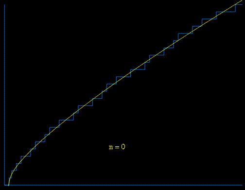
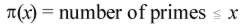

|
 This animation depicts the approximation of the prime counting function  (shown in blue) using the first 70 pairs of nontrivial zeros of the Riemann zeta function in a variant of von Mangoldt's explicit formula: 
At each step, the current function
(shown in yellow) is modified by adding a waveform whose frequency and
amplitude is related to the next pair of nontrivial (complex) zeros
in a very simple and direct way. |